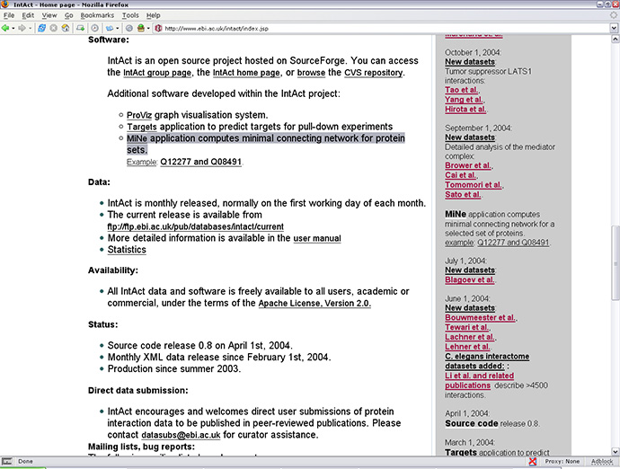
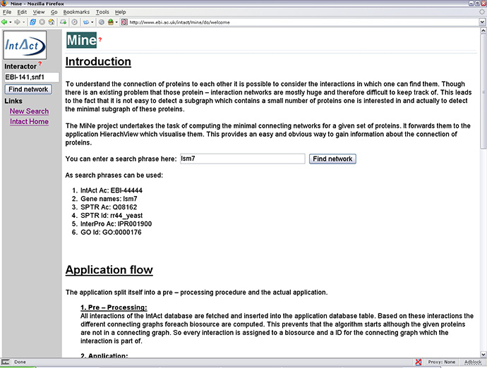
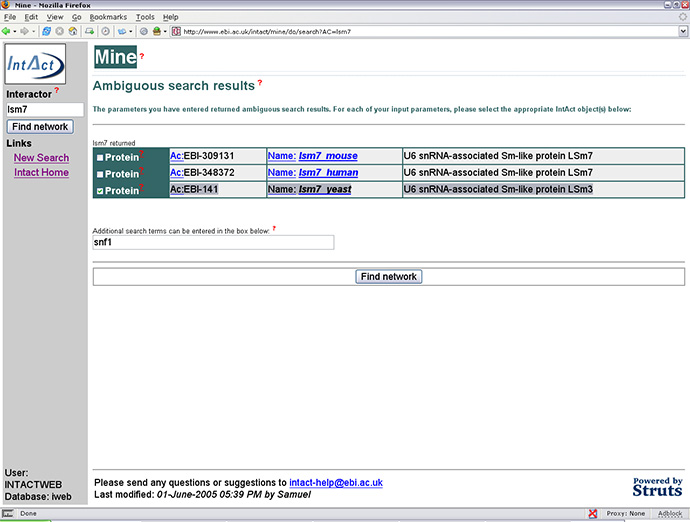
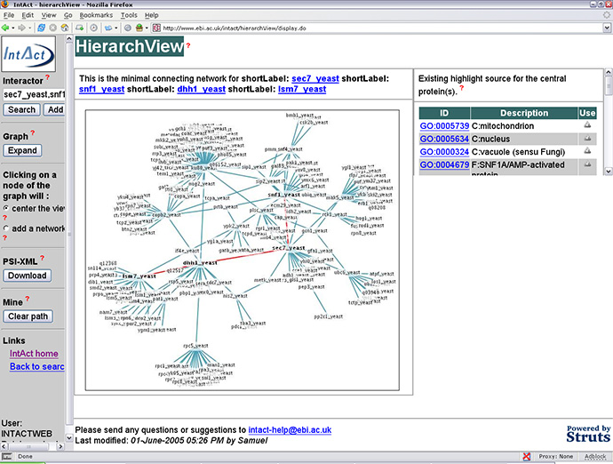
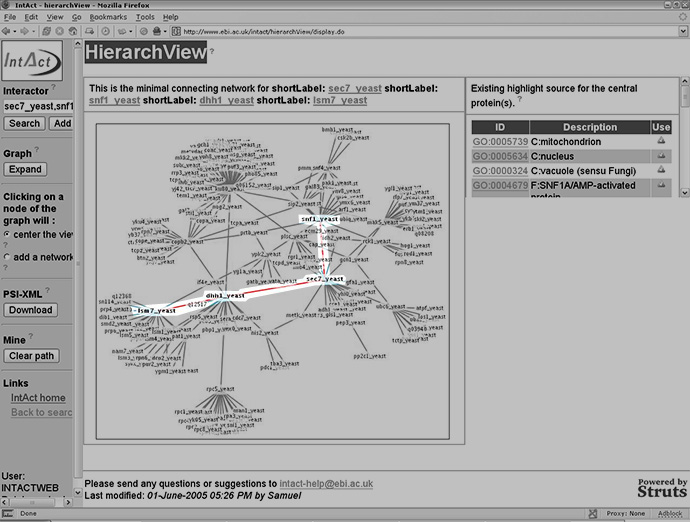

|
MiNe is an IntAct tool which calculates the minimal connecting networks for two given proteins. The tool can be accessed via the
IntAct homepage as shown below.

The
MiNe homepage
provides information on how the program works and gives an interface for inputting the chosen proteins for investigation.
Using MiNe
MiNe can be used by adding search phrases or individual entries into either the text box underneath the IntAct logo or alongside where
it says "You can enter a search phrase here". Suitable search phrases might be :-
- lsm7, snf1
- lsm7_yeast, snf1_yeast
- EBI-141, EBI-17516
or alternatively by entering just one of the pairs of proteins, as shown below.


If the search criteria (in this case lsm7) is ambiguous suitable choices are offered by the program as shown above. lsm7 is present in
both mouse, human and yeast thus a search for lsm7 gives multiple results.
Once two proteins have been identified the interaction network that connects them, as calculated by MiNe, is sent to the HierachView
program which displays (highlighted red) the shortest path between the two proteins using data from IntAct. See below.


As above but with the calculated path highlighted.
|